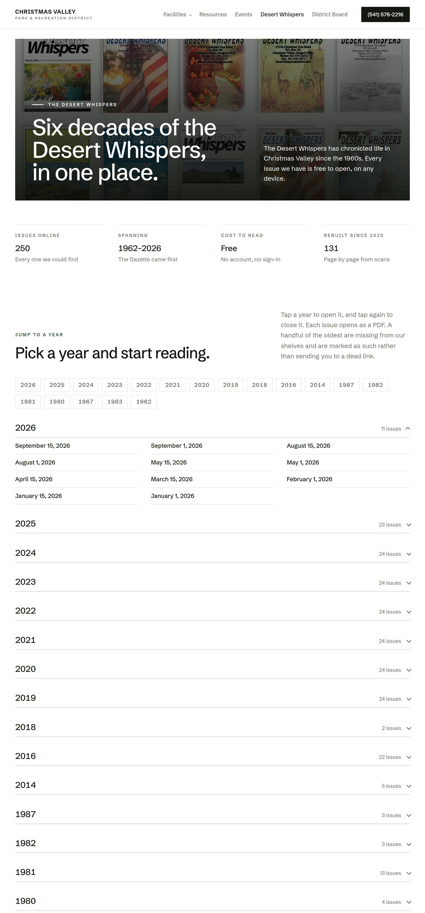
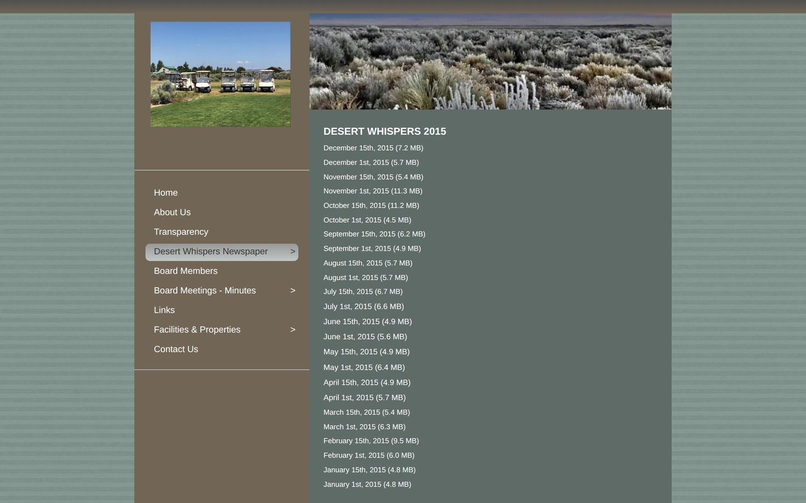
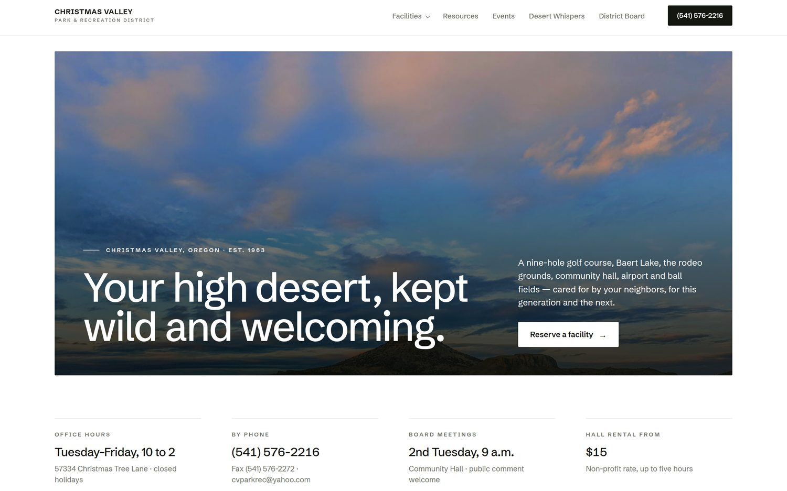
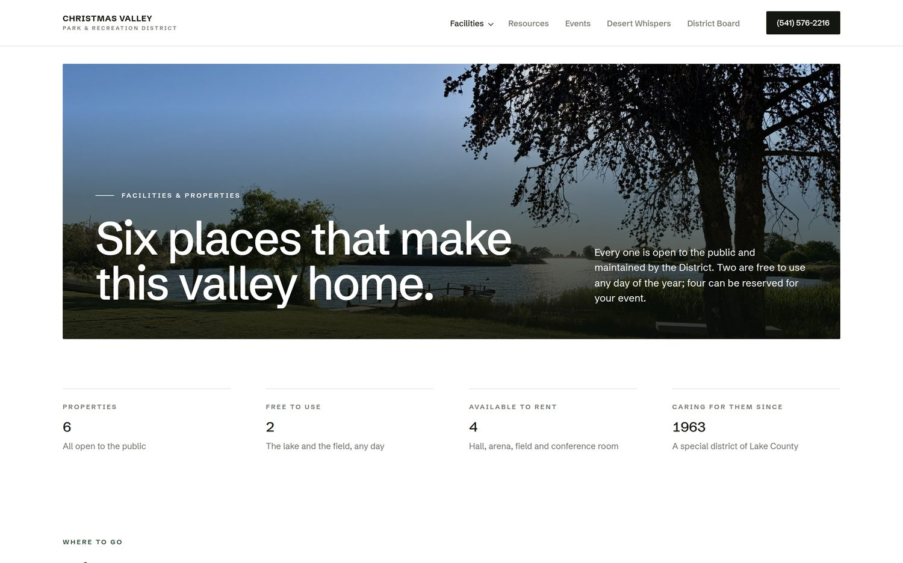
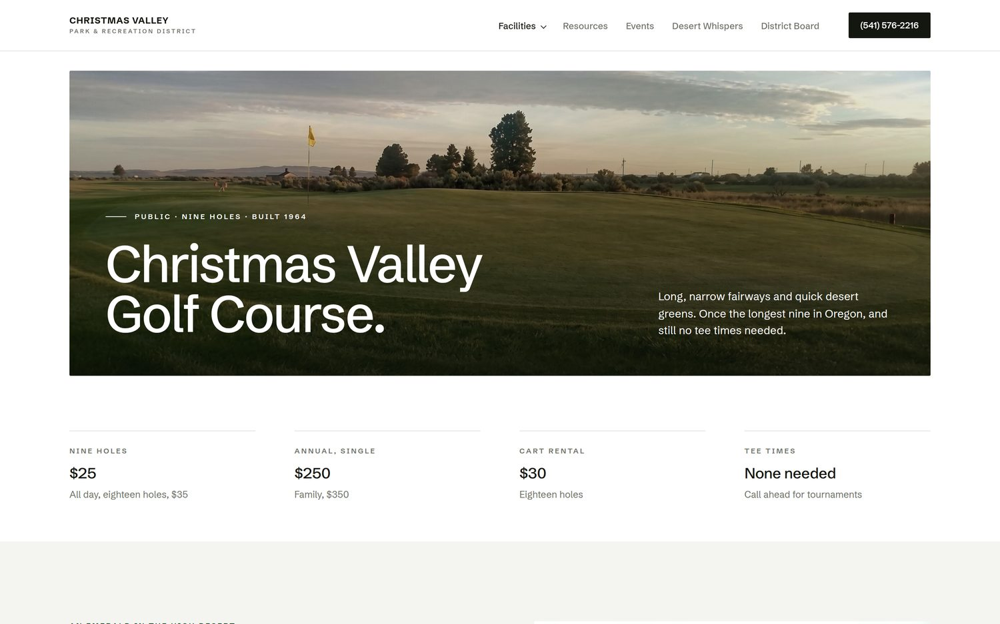
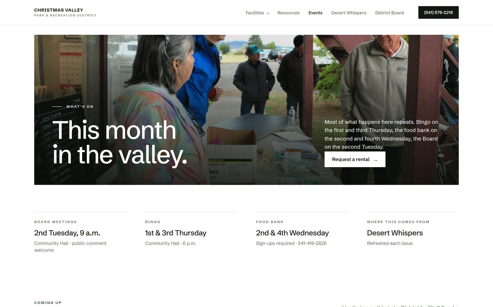
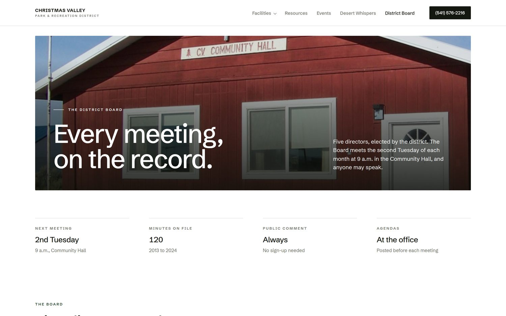
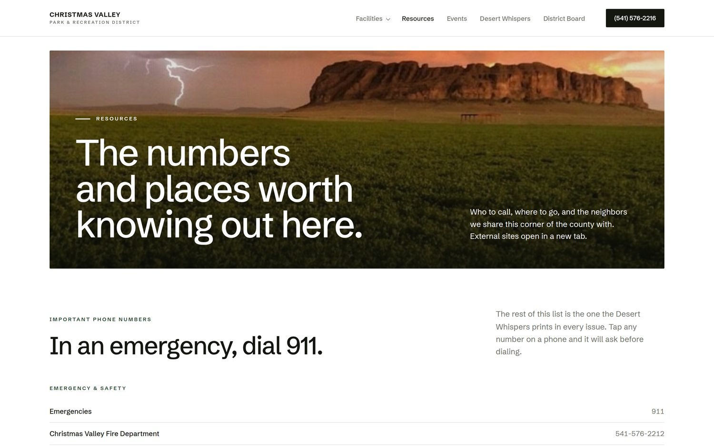
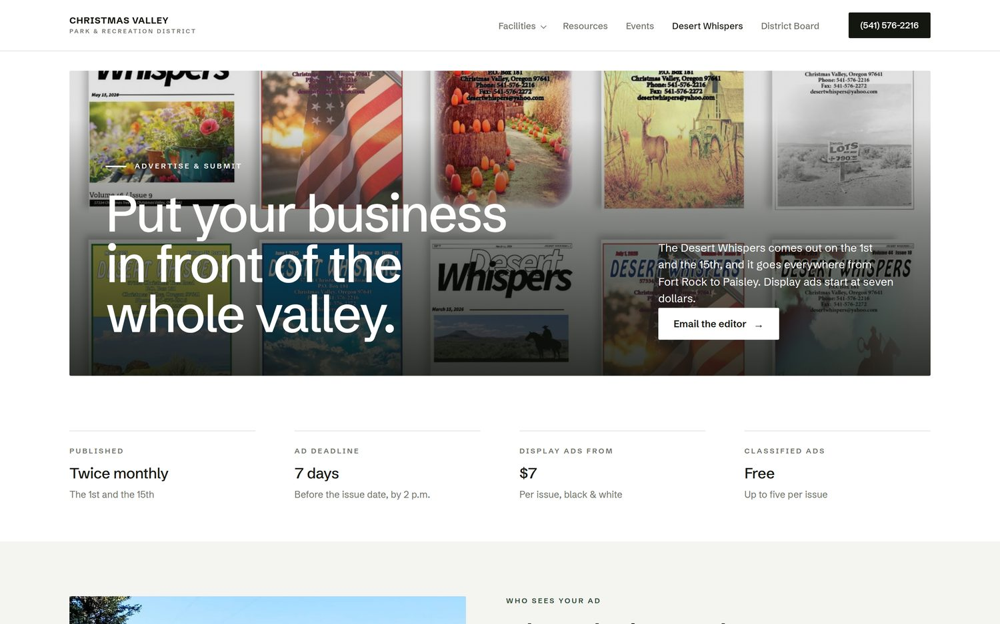
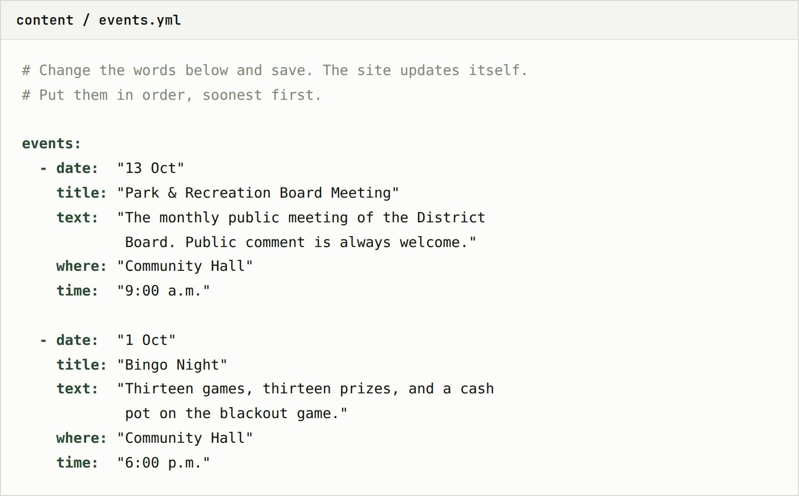

Over the past few months I rebuilt the District’s website as a personal project, including gathering every issue of the Desert Whispers I could find into one place. This is a walkthrough of what’s there, so the board can look it over together.
When the District lost access to its Facebook page at the beginning of the year and the paper started being shared in Facebook groups instead, I had the urge to start pulling them all back together into one place again. I’m an organization freak. But once I began that project, then they needed somewhere to live, and there started the beginning of the Park & Rec website build. That escalated quickly.
None of this was asked for and none of it obligates the District to anything.
It seemed better to build the thing and show it than to describe it, so that’s what this is.

Every issue I could locate is on the site as a PDF that opens on any device, with no account and no sign-in. A lot of the Desert Whispers issues from 2020 onward were rebuilt page by page from the image uploads on Facebook, even the ones I had to track down in Facebook groups. Issues from the 1960s through the 1980s came back from the Internet Archive.
All together there are 244 newspaper issues archived on the site, the September 15, 2026 issue being the newest, and the first issue of the Christmas Valley Gazette from 1962 being the oldest.
Each of the issues grouped by year. Listed as links to the actual newspaper file, stored on the site itself.
I ran an audit on every page of cvparkandrec.com this week, just to get an accurate read on where it stands right now.
Here are some of the things that came out of it. Most of them come from the website builder the site sits on, which is a discontinued product, not from anything anyone did wrong.

Fifteen pages. Every facility the District looks after has a page of its own, with its real rates and details carried over from the current site.
Office hours, phone, the next board meeting and hall rental rates are the first things on the page, because I assume that, aside from the Desert Whispers archive, those are what people come looking for most often.

The six property and facility pages the District looks after.

An example of a facility page. Green fees, memberships, what is loaned out, and the scorecard hole by hole, laid out to read on a phone.

A hand-kept list pulled from the latest issues of the paper. Bingo night, the food bank, the Boosters, the board meeting. The office updates it when the paper comes out.

Every set of minutes on one page, grouped by year, with the meeting schedule and public comment information alongside them.

The phone number list from the Desert Whispers, the landfill and transfer site schedule, and links to the county, BLM, the forest and the chambers.

The display ad rate card, deadlines, how to submit, and the policy for classified ads. More information online and available for residents means fewer calls that Park & Rec staff have to spend their time answering.

When this is your website and I’ve handed over the controls to you, how are the edits and updates going to get made without me there to do them? Good question.
There are three things that will need updating on a recurring basis:
I’ve made the process as easy and straightforward as possible, so as to remove any resistance an employee might feel towards keeping it updated.
That is the entire job. About a minute later it appears on the archive page, filed under the right year, with the date written out properly. No coding, no technical expertise required, none of that. Anyone could do it.
The same process as above.
These live in small text files written in plain words, one subject per file. Here is what the Events file looks like.
It is a list of the events, with the date, the name, a sentence, the place and the time. To change the events, delete the old date, title and text, and type in a new one.

There is no content system to log into, no plugins to keep updated, and no software subscription behind any of it. Every change is kept and every change can be undone, so nothing anyone does in the office can break the site permanently.
There will also be a written instruction sheet for each update task, along with a screen-recorded walkthrough for each one. So down the road when a new employee is hired, hand them the instructions and the videos and they will be good to go in ten minutes.
Screenshots only go so far. Here is a link to the real working thing, so you can scroll through every page. Try it on both a phone and a computer.
The Desert Whispers archive page is personally my favourite, and I think that one is certainly worth opening, just to see every issue listed on the page, where anyone on any device can open the actual PDF with one tap.
That’s all of it. I’m not asking the board for anything, and there’s nothing to decide. I built it because the paper is worth keeping and I like this community.
If it’s useful to look at, look at it. If it’s useful for more than that someday, you know where to find me.